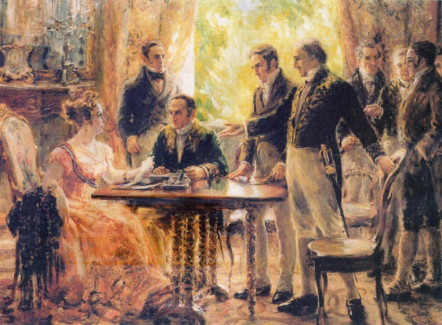
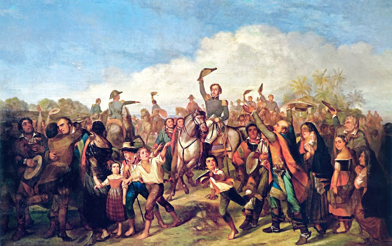
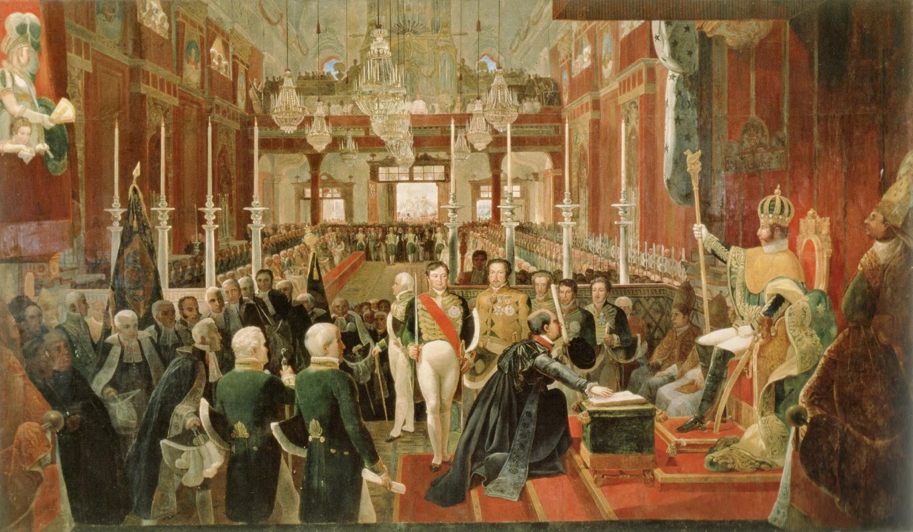
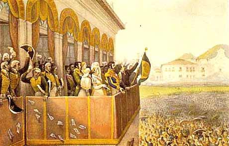
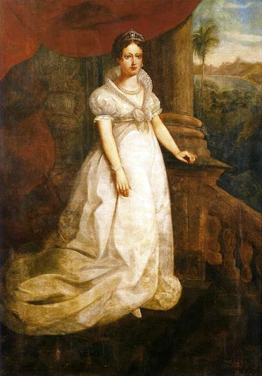
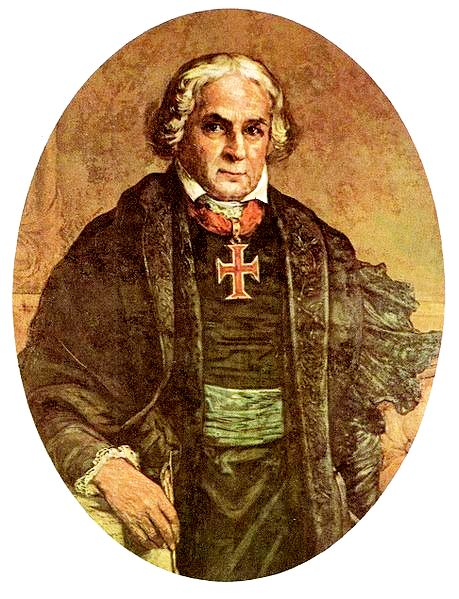

O Grito do Ipiranga, 1888

Sessão do Conselho de Estado, 1922

A Proclamação da Independência, 1844

Coroação de Dom Pedro I, 1828

Aclamação de Dom Pedro I, 1824

Dom Pedro I, final do Século XIX
A Bandeira Imperial do Brasil, 1822-1889

Dona Leopoldina, 1921

José Bonifácio de Andrada e Silva, 1902